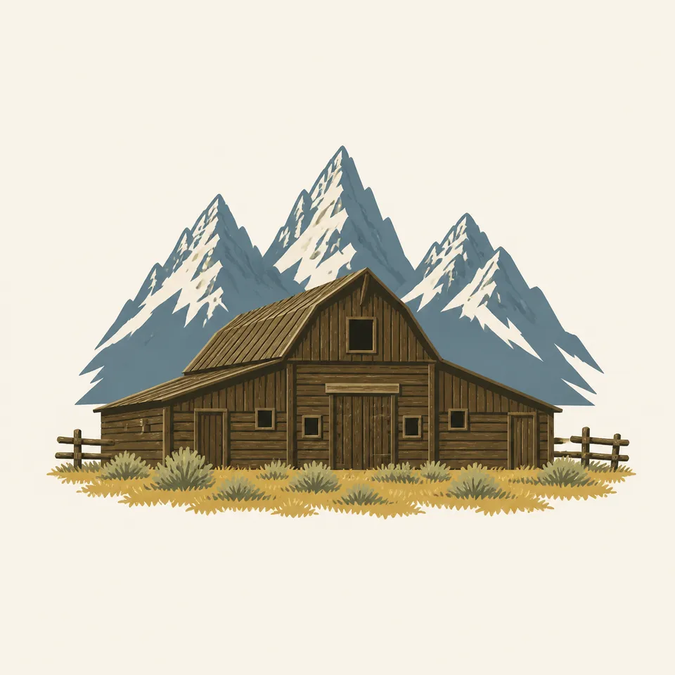
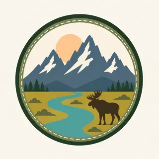

01
The valley floor
Sagebrush dominates the valley. Forests cover the mountainsides, summer wildflowers fill meadows, and streams drop from rocky canyons to lakes at the foot of the range. The nature page is a stack of bands, not a single view.
TrailMark Archive Edition
Wyoming | Jackson Hole
The Grand stands 13,770 feet, more than 7,000 feet above a valley the park did not fully include until 1950.
Archive No. TM-GRTE-027
National Park since 1929
Collection Jackson Hole
Park Overview
Grand Teton National Park was established in 1929. Jackson Hole National Monument was created in 1943. The two were combined into the present park in 1950.
The park's creation history is more exact. On February 26, 1929, President Calvin Coolidge signed a bill for a 96,000-acre park that included the Teton Range and six glacial lakes at the base. On September 14, 1950, President Harry S. Truman signed the bill that merged that park with the 1943 monument, including land John D. Rockefeller, Jr. had bought, into a park of about 310,000 acres.
The nature page gives the vertical fact the law was trying to hold: the range rises more than 7,000 feet above Jackson Hole, from 6,320 feet on the sagebrush valley floor to 13,770 feet on the Grand Teton.
Emotional Thesis
The header is the skyline everyone agrees on, with the Snake River in front and a moose in the sage. For twenty-one years the legal park was mostly the rock and the lakes. The barns, the sage, and much of the river flats were the fight.
The extra drawing is a barn with the peaks behind it. That is the 1950 park: a valley people were already using, set under a range that had been reserved first.
Landscape Highlights
01
Sagebrush dominates the valley. Forests cover the mountainsides, summer wildflowers fill meadows, and streams drop from rocky canyons to lakes at the foot of the range. The nature page is a stack of bands, not a single view.
02
Alpine lakes sit in glacial cirques. The larger lakes along the base were dammed by glacial moraines and mirror the peaks on calm days. The 1929 park included six of those glacial lakes with the range.
03
The Snake rises north of the park and winds through the valley. The header follows that line. It is the water you see before you understand how young the valley half of the park is in law.
Wildlife
The wildlife page invites you from the tiniest shrew to the largest grizzly bear. This essay does not add a population the nature page does not give.

01
The moose in the header sage is the archive's valley animal. It is a painting, not a count.
02
Plants are described as wildflowers in the meadows, sagebrush as the backdrop, and forests holding the slopes. That division is the plant page's own.
03
Nonnative species and disease are separate NPS topics. They are why a wildlife viewing is not a guarantee.
Geology
The nature page states the result: more than 7,000 feet of relief, 6,320 to 13,770. A fuller tectonic chapter lives on the geology page and is not renumbered here.
01
Lakes at the foot of the range are held by glacial moraines. Cirques higher up still hold smaller lakes.
02
The Snake is through-flowing. Its headwaters are north of the park, so the river is not born at the skyline in the painting.
03
The coldest temperature recorded in the park is minus 63 degrees Fahrenheit. That is climate sitting on the same rocks.
NPS calls the winters long, snowy, and bitterly cold, with snow often from early November to May. The peaks in the header are the year-round fact. The valley roads are not.
Melt fills the moraine lakes and the river. Wildlife and trail openings are on the NPS calendar, not in this paragraph.
The nature page calls summer brief and relatively warm, the renewal after that winter. Wildflowers and the barn country are both in season. So are crowds.
The header uses yellow trees along the river. That is a real valley color. It is also when storms return to a park that has already recorded 63 below zero.
Photography
A skyline with no sage and no river is only the 1929 park. The 1950 park includes the floor.
01
Show the flat valley and the sudden wall. The 7,000 feet is the gap between them.
02
Historic districts such as Menors Ferry and Mormon Row are real places with their own rules. Do not trespass a pasture to match the drawing.
03
A moose in the sage is the painting. The living animal sets the distance, and NPS says so in the field.
Field Notes
The mountains were protected first. The valley under them took another twenty-one years.
TrailMark Field Notes

Badge Story
The Teton skyline is a row of sharp peaks. One smooth cone would be a different range.
Several summits, the Grand the highest, over a river or a lake.
Sage or a barn keeps the valley in the mark.
Do not borrow the Rocky Mountain lake-and-spruce formula. This range meets the plain more abruptly.
Archive No.027
LocationJackson Hole
ReleaseTeton Mark
Stewardship / Safety
The management page lists grazing, wildlife disease, winter use, fire, and the airport among the arguments that did not end in 1950. Current rules are on the NPS site.
Historic buildings and districts are cultural resources. The barn in the drawing is a type. The real ones have boundaries.
Give bears, moose, and other animals the distance the park posts. The shrew-to-grizzly line is a warning as well as a welcome.
Snow from November to May is the nature page's summary. A trail that was obvious in the painting may be a slope.
John D. Rockefeller, Jr. Memorial Parkway, established in 1972, is managed with this park and is not the same boundary. Read the map.
Current conditions, fees, and alerts are on the National Park Service site.
Continue the Archive
Yellowstone shares the ecosystem and not the skyline. Rocky Mountain, in this batch, is the Front Range lake. The Tetons are this wall.